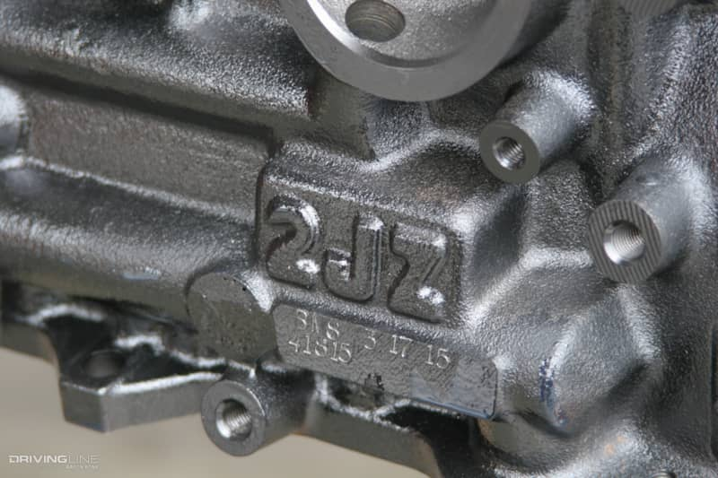
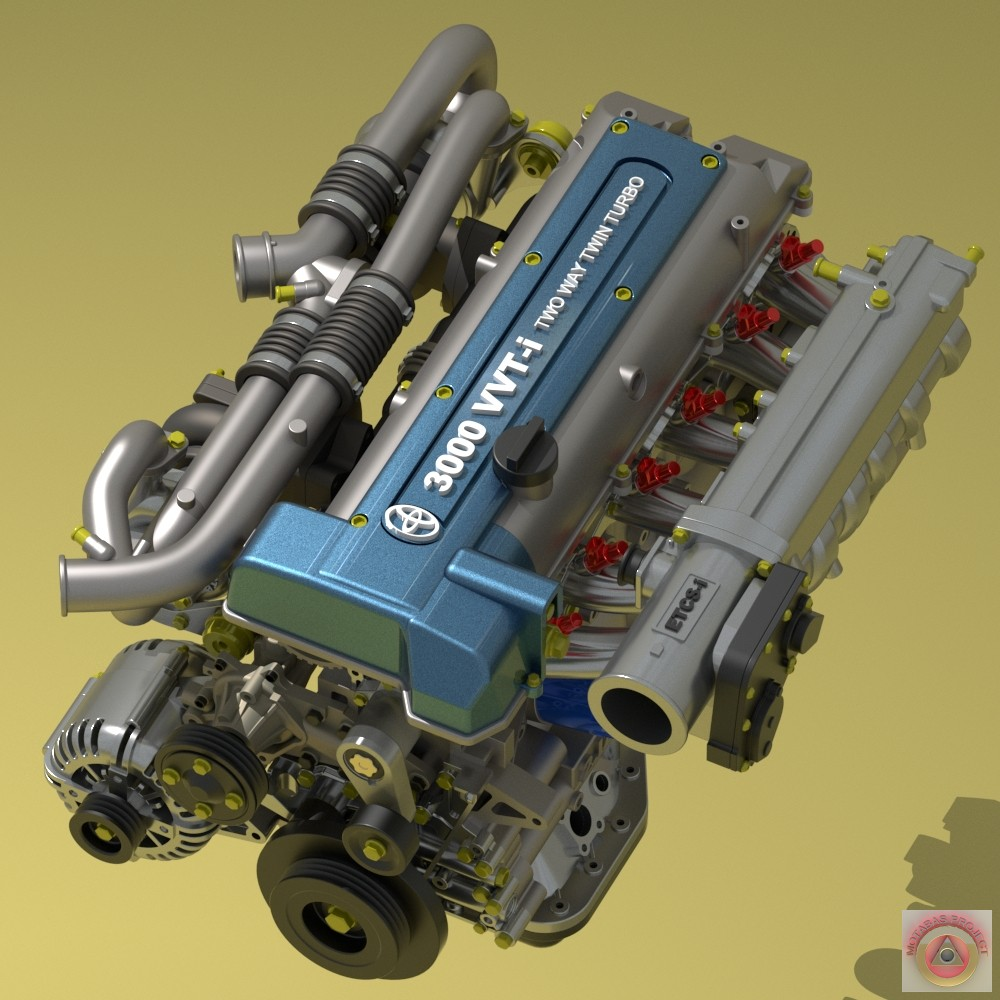

Engine Power
The 2JZ engine was first introduced in the Toyota Supra in 1993. It was a 3.0-liter inline-6 engine that produced 220 horsepower. This engine was capable of reaching speeds of up to 160 mph.
Modifications
The 2JZ engine is known for its ability to handle modifications. It can be turbocharged or supercharged to produce up to 1,000 horsepower.
Maximum Horsepower
The 2JZ engine has reached a maximum of 2,000 horsepower with the right modifications.
World Engine
The 2JZ engine has become one of the most popular engines in the world. It is known for its durability, reliability, and ability to handle modifications. It has even outperformed some of its German counterparts.
